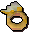

")
Unique Jewellery Guide
Introduction | The Ring of Charos | Ring of Visibility | Warrior Ring | Berserker Ring | Seers' Ring
Archers' Ring | Salve Amulet | Gnome Amulet | Glarial's Amulet | Ghostspeak Amulet | Catspeak Amulet
Monkeyspeak Amulet | Camulet | Amulet of Accuracy | Amulet of Ranging
Archers' Ring | Salve Amulet | Gnome Amulet | Glarial's Amulet | Ghostspeak Amulet | Catspeak Amulet
Monkeyspeak Amulet | Camulet | Amulet of Accuracy | Amulet of Ranging
Introduction
As you meander your adventuring way across the many lands of RuneScape, terrorising innocent civilians and occasionally helping someone out, you may find yourself in possession of some unique jewellery. These items cannot be crafted, and are normally only given out as a reward or to help you on your way in a quest.
The Ring of Charos - Activated
![[image]](../../img/main/kbase/guides/pet/ring_of_charos_unlocked.gif) |
Gained during Creature of Fenkenstrain, activated during Garden of Tranquillity.
The Ring of Charos is an ancient and undeniably powerful artefact. The bearer of this ring is able to bend the weak of mind to their will, even if only slightly, enabling them to make life simpler or to completely fool the very stupid. The Ring of Charos itself does very little until it is activated, but once this has happened it has literally dozens of uses. To see when you can use it, simply chat to people; if you see a chat option beginning with '(Charm)', it is an option opened up by the power of the Ring of Charos! Some of its uses are listed below:
Remember, though they are not listed, there are dozens more uses for the Ring of Charos. |
Ring of Visibility
![[image]](../../img/main/kbase/items/rings/goldring.gif) |
Gained during the Desert Treasure quest.
The Ring of Visibility is a curious piece of magical paraphernalia, enabling even the most unbelieving of adventurers to see the most ancient of ghosts. If you are wearing the Ring of Visibility, you will be able to see Mysterious Ghosts in certain locations around RuneScape. Of course, you will need a Ghostspeak Amulet to talk to them. Having the Ring of Visibility also opens up the possibility of getting a set of ghostly clothes. |
Warrior Ring
![[image]](../../img/main/kbase/items/rings/warrior_ring.gif) |
Dropped by Dagannoth Rex within the depths of the Waterbirth Island Dungeon.
Many centuries ago the Fremennik warriors would go to battle with the dagannoths wearing their finest armour and wielding their most vicious swords. They also took a number of magic artefacts with them, a number of which survive to this day. The Warrior Ring adds +4 to both your slash Attack bonus and your slash Defence bonus. |
Berserker Ring
![[image]](../../img/main/kbase/items/rings/bezerker_ring.gif) |
Dropped by Dagannoth Rex within the depths of the Waterbirth Island Dungeon.
The Berserker Ring imbues its owner with inhuman strength and dulls their senses so they feel no pain. The Fremennik Berserkers wore these rings to help them last longer against the vile daggermouths. The Berserker Ring adds +4 to your Strength and +4 to your crush Defence bonus. |
Seers' Ring
|  | Dropped by Dagannoth Prime within the depths of the Waterbirth Island Dungeon.
This mysterious ring imbues its owner with eldritch powers, connecting them more closely with the mystic paths that cross RuneScape unseen. The Seer Ring adds +4 to both your Magic Attack bonus and your Magic Defence bonus. |
Archers' Ring
![[image]](../../img/main/kbase/items/rings/archer_ring.gif) |
Dropped by Dagannoth Supreme within the depths of the Waterbirth Island Dungeon.
Rangers who desire the skill to send an arrow through the loop of a key from two hundred paces invariably hunt out an Archers' Ring. The Archers' Ring adds +4 to both your Ranged Attack bonus and your Ranged Defence bonus. |
Salve Amulet
![[image]](../../img/main/kbase/items/amulets/salve_amulet.gif) |
Gained at the completion of the Haunted Mine quest.
The Salve Amulet is a shard of crystal fashioned from the waters of the Salve to be the bane of the undead. Through its subtle refractions, the crystal tells its owner how best to fight the reanimated. The Salve Amulet gives a significant combat bonus against the undead, as well as adding +3 to Prayer. Those determined enough to fight their way through Tarn's Lair will find a journal explaining how to make the Salve Amulet even more powerful against the undead. |
Gnome Amulet
![[image]](../../img/main/kbase/items/amulets/gnome_amulet.gif) |
Gained at the completion of the Tree Gnome Village quest.
The Gnome Amulet is a small green gem imbued with protective magicks. It is a gift given only to those who have proven themselves friendly to the gnomes. The Gnome Amulet adds a hefty +13 to your stab, slash and crush Defence bonuses. |
Glarial's Amulet
|
Glarial's Amulet is discovered during the Waterfall Quest.
Glarial's Amulet is an ancient artefact from days long past. Its enchantments still last, though, and the inquisitive adventurer may find it useful still. Glarial's Amulet allows you to pass through the Baxtorian Waterfall, even if it is only in your inventory. |
Ghostspeak Amulet
![[image]](../../img/main/kbase/items/amulets/ghostspeak_amulet.gif) |
The Ghostspeak Amulet is gained during The Restless Ghost.
Some priests of Saradomin, willingly or not, are equipped to deal with the spirits of the dead, usually by being the owner of a Ghostspeak Amulet. The Ghostspeak Amulet will allow you to talk to ghosts and similarly life-challenged individuals, who cannot otherwise be communicated with. |
Catspeak Amulet
![[image]](../../img/main/kbase/items/amulets/catspeak_amulet.gif) |
The Catspeak Amulet is gained during Icthlarin's Little Helper, and enchanted during Tail of Two Cats.
The Catspeak Amulet is an invaluable tool for those wishing to own a cat, and in its enchanted form it can be used to track down one of RuneScape's great heroes: Bob. The Catspeak Amulet allows you to talk to cats. The enchanted Catspeak Amulet can also be used to locate Bob by opening it in your inventory. |
Monkeyspeak Amulet
![[image]](../../img/main/kbase/items/amulets/monkeyspeak_amulet.gif) |
The Monkeyspeak Amulet is gained during Monkey Madness.
Monkeyspeak Amulets are rare items indeed, for they require their future owners to travel to far-off Ape Atoll and to evade the vigilant monkeys that live there for long enough to gather the components for these amulets. The Monkeyspeak Amulet allows you to speak to monkeys throughout RuneScape, even those outside Ape Atoll. |
Camulet
![[image]](../../img/main/kbase/items/amulets/camulet.gif) |
The Camulet is gained at the end of Enakhra's Lament.
The Camulet is a strange device, for few people would consider communicating with camels to be worthwhile. Those people, however, have never had a long and fulfilling conversation with one of these ships of the desert... The Camulet allows you to speak with camels and ugthanki, as well as providing a teleport to Enakhra's Temple in the Kharidian Desert. |
Amulet of Accuracy
![[image]](../../img/main/kbase/items/amulets/accuracy_amulet.gif) |
The Amulet of Accuracy is a reward for completing Imp Catcher.
The Amulet of Accuracy is a useful artefact whose design was perfected eons ago, before living memory. Its true brilliance lies in its all-round usefulness, and that it is simple for most young adventurers to obtain. The Amulet of Accuracy adds +4 to all of your Attack bonuses. |
Amulet of Ranging
![[image]](../../img/main/kbase/items/amulets/amulet_ranging.gif) |
Dropped by aquanites, which are found deep within the Fremennik Slayer Dungeon.
The Amulet of Ranging is the perfect complement for any ranger, being, as it is, an amulet created just for those adventurers who love flinging arrows and bolts. The Amulet of Ranging gives +15 Ranged attack and +10 Magic defence bonuses. |
Click here for information about non-unique enchanted jewellery

More articles in
Miscellaneous Guides
|
|
|
Further Help
If this article does not help you, you may find the following sections of the RuneScape site helpful:
|
|